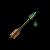
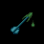
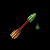

QUARRELS
QUARRELS[POISONED QUARRELS RESALE TRICK]
QUARRELS
|
QUARRELS
Basic Price[25]: 12.0
Enemies: 149 |
Base Damage 3+Crossbow |
QUARRELS POISONED Basic Price[25]: 65.0 
Enemies: 110 |
Base Damage 7+Crossbow |
|
Accuracy 0+Crossbow+Skill |
Accuracy -5+Crossbow+Skill |
||
|
TSURANI QUARRELS
Basic Price[25]: 50.0
Enemies: 19 |
Base Damage 7+Crossbow |
TSURANI QUARRELS POISONED Basic Price[25]: 100.0 
Enemies: 19 |
Base Damage 14+Crossbow |
|
Accuracy -5+Crossbow+Skill |
Accuracy -10+Crossbow+Skill |
||
|
ELVEN QUARRELS
Basic Price[25]: 175.0
Enemies: 41 |
Base Damage 9+Crossbow |
ELVEN QUARRELS POISONED Basic Price[25]: 225.0 
Enemies: 9 |
Base Damage 15+Crossbow |
|
Accuracy 15+Crossbow+Skill |
Accuracy 10+Crossbow+Skill |
||
|
FLAMING QUARRELS
Basic Price[25]: 300.0
Enemies: 21 |
Base Damage 25+Crossbow |
ENCHANTED QUARRELS
Basic Price[25]: 400.0
Enemies: 3 |
Base Damage 30+Crossbow |
|
Accuracy -10+Crossbow+Skill |
Accuracy 20+Crossbow+Skill |
In Chapter 1 there are 5 such Archers, but you are unlikely to run into
them, unless you are very adventurous. (You may meet them later, in Chapters
2, 3 or 6.)
In Chapter 2 the maximum number of Poison Archers is 7, but you may
already have killed 5 of them in Chapter 1. If you haven't, you will
probably encounter 3 of these. The remaining 2 are hard to find.
(One can only be encountered in Chapter 2, but the other one remains until
Chapter 6.)
In Chapter 3 the maximum number of Poison Archers is 14, but you may
have killed 6 of them in Chapters 1 and 2. If not, you are unlikely to
meet them, unless you have an urge to travel. Out of the remaining 8, you
are quite likely to run into 5, as you go North (3 in this Chapter only);
but the remaining 3 won't be met with, unless you go the other way (in this
Chapter only).
Chapter 4 has 46 Poison Archers !
Chapter 5 has 13 Poison Archers .
In Chapter 6 you can encounter 4 Poison Archers carried over from
previous Chapters (1, 2, 3), if they're still alive. In addition this Chapter
has 45 additional Poison Archers , specific to this Chapter. So look out!
Chapter 7 has 18 Poison Archers (and all their Quarrels are either Tsurani
or Elven).
There is only one Poison Archer in Chapter 9.
 [TOP OF PAGE]
[TOP OF PAGE]